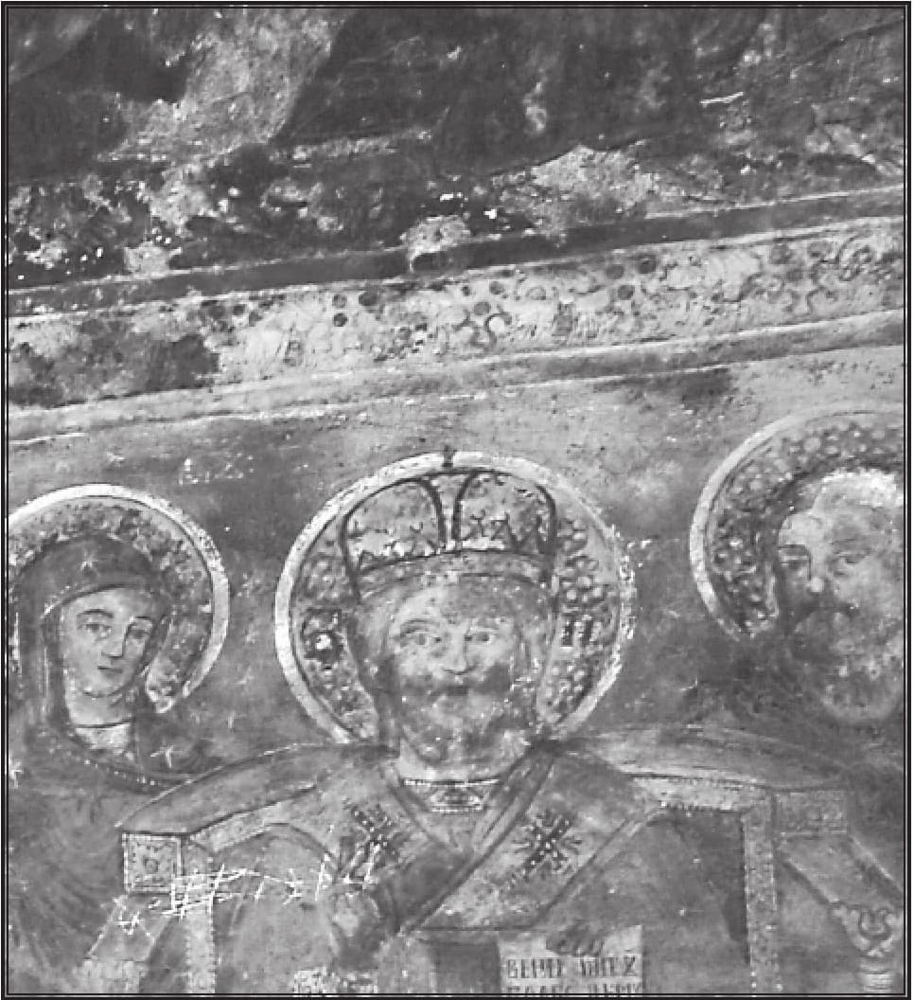

Grigore Ureche aprecia astfel cele două domnii ale lui Petru Rareș (1483 - 1546): „cu adevărat era ficior lui Ștefan vodă cel Bun, că întru tot simăna tătâne-său, că la războaie îi mergea cu noroc, că tot izbândiia, lucruri bune făcea, țara și moșiia sa ca un păstor bun o socotiia, judecată pre direptate făcea”. Modelul ilustrului său tată i-a diriguit comportamentul și gândirea, chiar dacă nu s-a putut ridica până la măreția istorică a lui Ștefan cel Mare și Sfânt. Unii i-au reproșat nestatornicia și lipsa de simț politic. Toate sunt însă relative și trebuie judecate contextual. Petru Rareș a avut vecini puternici, Imperiul Otoman se afla în plină glorie, iar la răsărit Ivan cel Groaznic (1530 - 1584) s-a proclamat primul țar al imperiului slav, aflat și el în expansiune, și consacrând, astfel, noua conștiință imperială. Domnitorul s-a raportat cu luciditate la conjunctura istorică și a continuat tradiția tatălui său cu privire la arta religioasă în arhitectură și pictură. În acest sens, ctitoriile lui concurează cu ale lui Ștefan cel Mare: Moldovița (1537), Humor (1535), apoi la Baia, Botoșani, Hârlău, Târgu Frumos sau Roman, culminând cu una dintre cele mai cunoscute realizări ale sale, Mănăstirea Pobrata sau Probota (1532).
Dincolo de factologia istorică a celor două domnii, cu eșecurile și realizările lor, se știe însă prea puțin că Petru Rareș a avut o gândire istorică și teologică de mare adâncime, oglindită nu numai în ctitoriile sale mânăstirești. După cum a demonstrat, între alții, Nicolae Iorga în celebra lui carte Bizanț după Bizanț, domnitorii români au avut profunda conștiință că sunt continuatorii modelului politic și religios al Bizanțului, mai cu seamă după căderea acestuia în catastrofalul an 1453. Petru Rareș ocupă un loc privilegiat, în atare privință și afirmația ne-o întemeiem pe un text rusesc din secolul al XVI-lea, coroborat de Sorin Dumitrescu, recent, cu o particularitate a ctitoriilor bisericești rareșiene. Acestea au la intrare pictura, cu statut de icoană, a scenei Luării Constantinopolului. Ea are, argumentează Sorin Dumitrescu, o importanță covârșitoare în „doctrina” domniei voievodului, cu important ecou în lumea țarilor până la Petru cel Mare.
Prin 1540 - 1541, un curtean și diplomat rus, de origine lituaniană, pe nume Ivan Peresvetov a făcut o lungă călătorie în Europa Occidentală. La întoarcere, a poposit la Suceava, la curtea lui Petru Rareș, aflat în 1541, din 3 septembrie, reinstalat ca domn, după zbuciumata primă domnie (20 ianuarie 1527 – 18 septembrie 1538), acum mai matur și mai înțelepțit. Rareș a făcut o așa puternică impresie asupra celui de la curtea țarului Ivan cel Groaznic, încât Ivașko Peresvetov a acceptat să rămână ca oaspete la Suceava nu mai puțin de cinci luni, timp în care a cunoscut gândirea politică și religioasă a domnitorului moldovean. Refuzând a-i rămâne sfetnic lui Petru Rareș, el s-a grăbit, apoi, să ajungă la curtea țarului și să-i împărtășească modelul de domn creștin pe care-l cunoscuse în Moldova, cu atât mai mult, cu cât Rareș însuși își punea mari speranțe că Ivan Peresvetov va reuși să-l transforme pe Ivan cel Groaznic într-un veritabil moștenitor al creștinismului patristic bizantin. Camarila boierească însă i-a barat accesul la țar, inclusiv „jalbei” care s-a numit Plângerea lui Ivan Peresvetov. La noi, acest text a fost semnalat întâia oară de cunoscutul slavist și istoric literar Ștefan Ciobanu, care l-a tradus din rusește și l-a publicat într-o revistă a Bisericii Ortodoxe Române, în 1944, așadar cu 65 de ani în urmă. Moment cum nu se poate mai neprielnic, de unde și lipsa de ecou a Plângerii în cultura românească din vremea invaziei sovietice. Textul a rămas îngropat, fiind restituit, grație lui Sorin Dumitrescu, de către Editura „Anastasia”, apoi comentat de același și retipărit în revista Axa, bilunar al revistei Scara, București, publicație de oceanografie ortodoxă, an II, nr. 29 din 16 – 30 noiembrie 2009, pp. 24 - 29.
Textul lui Ivan Peresvetov își dezvăluie autenticitatea (pare-se, de care nu era pe deplin convins Ștefan Ciobanu), făcând lumină asupra insistenței cu care Petru Rareș a valorificat, în pictura bisericească, scena Căderii Constantinopolului, eveniment crucial în destinul istoric al Europei Răsăritene și al creștinismului ortodox. Domnitorul român a avut deplina conștiință a catastrofei istorice de marți, 29 mai 1453. (Reverberație puternic resimțită și-n sânul popoarelor răsăritene, unde și azi ziua de marți este considerată malefică, cu ghinion). El a ținut să-i dea forță dogmatică iconică, pe care puțini au înțeles-o. Căderea Constantinopolului este ridicată la simbol de apocalipsă, ca pedeapsă de la Dumnezeu, iar nu o simplă lamentație în fața nenorocirii. Cetatea Bizanțului trebuia să cadă cu necesitate din pricina destrăbălării la care ajunsese, din pricina batjocoririi creștinismului însuși în evoluția lui de la Romania (romaioi, Noua Romă) la o grecitate decrepită care va supraviețui în două cartiere, între care Fanarul va juca rol important și-n istoria Principatelor Române. Cu o arguție remarcabilă, Sorin Dumitrescu răstoarnă interpretarea care s-a dat până acum fenomenului artistic religios al celebrelor mânăstiri din Nordul Moldovei, în speță al celor ctitorite de Petru Rareș. Texul jalbei lui Peresvetov are ca punct nodal, generator momentul căderii Constantinopolului. Or, după cum am precizat deja, bisericile ctitorite de Petru Rareș au la intrare această scenă capitală. Istoricii artei de până acum au văzut în scena Luării Constantinopolului un simplu adaos la iconografia mânăstirilor rareșiene. Dimpotrivă, descoperă sagace Sorin Dumitrescu, această scenă constituie arheul generator al întregii iconografii mânăstirești: „Această lipsă de perspicacitate a întârziat identificarea frescei ca imagine-reper a Luării Constantinopolului, deturnând interpretarea pe traseul incomparabil sofisticat al analogiei sau al parabolei. Mai simplu spus, nu «scena» Luării Constantinopolului a fost adăugată programului iconic, ci programul a fost alcătuit în funcție de aceasta, model pe care-l găsim în scrierea curteanului rus, unde ideile lui Petru Rareș asupra istoriei și lucrării Proniei sunt deduse și decurg constant din contemplarea aceleiași «scene». În esență, «scena» Luării Constantinopolului și «recomandarea» din scrierea lui Peresvetov se girează reciproc și își garantează una alteia identitatea și autenticitatea”. (Sorin Dumitrescu, „Sursa Peresvetov”, I, în revista citată, p. 25).
În intențiile curteanului moscovit, „plângerea” lui constituie un fel de „învățături” neagoebasarabești ale lui Petru Rareș către Ivan cel Groaznic: „Așa zice Petre, voievodul românesc: Dacă vrei (să cunoști) înțelepciunea împărătească, să știi despre oștire și despre așezămintele vieții împărătești, atunci să citești până la sfârșit luarea Constantinopolului, să nu cruți pe sine cu nimic, și acolo vei găsi tot ajutorul lui Dumnezeu. Dumnezeu îi ajută nu pe cei leneși, ci pe cei care muncesc și îl cheamă pe Dumnezeu în ajutor, și cei ce iubesc dreptatea și judecă cu judecată dreaptă. Dreptatea pentru Dumnezeu este bucuria inimii, iar pentru împărat mare înțelepciune. Am observat, Sire, și pentru împărăția ta un mare binevoitor. Și eu, Sire, auzind acele cuvinte de la el, le-am scris, le-am adus la tine, Sire, slujind la tine, după cum, Sire, îți place serviciul meu, al robului tău”.
Avertismentul e de a nu-i urma pe greci în năruirea creștinismului și a imperiului: „Și zice voievodul românesc Petre: au fost Grecii leneși de a apăra credința creștină în contra necredincioșilor. Astăzi nevroind apără credința păgână de (ofensivă) invazie, împăratul turcesc ia la 7 copii de la Greci și Sârbi pentru a-i învăța militărie și îi trece la credința sa; iar ei (Grecii și Sârbii) despărțindu-se de copiii lor plâng cu mare plâns, dar cu nimic nu se pot ajuta”. Învățăturile au sensul unei vorbiri de funie în casa spânzuratului, știindu-se cruzimea și fărădelegile Groaznicului, cel înconjurat de o boierime lacomă și vicleană. Pe de altă parte, atât Ivan Peresvetov, cât și Petru Rareș voiau cu toată sinceritatea un țar vrednic de a fi urmaș al lui Constantin cel Mare, de-aici încolo Rusia pretinzându-se a treia Romă. Rareș însuși se împotrivise turcilor, urmând pilda tatălui, dar, ca și acesta, ajunsese la concluzia că e mai benefic a închina țara turcilor decât creștinilor mai răi decât păgânii. El avea, în același timp, oarecum o filozofie istorică similară cu a viitorului Dimitrie Cantemir, cel din scrierea Interpretarea naturală a monarhiilor. Cantemir credea că Rusia chiar este un imperiu creștin în măsură să contracareze Imperiul Otoman aflat în disoluție din pricină că se dovedise un imperiu-avorton, iar nu unul natural. De aici alianța lui cu Petru cel Mare la 1711. Petru Rareș însă nu se grăbește la nicio alianță nechibzuită cu Ivan cel Groaznic, ci doar speră, prin devotatul curtean și sfătuitor al țarului, să-l îndrume pe calea dreaptă a creștinismului: „Am venit, Sire, din Ungaria în Țara Românească și am fost cinci luni la Petre, voievodul românesc, în Suceava, și el despre tine, Sire, marele și binecredinciosul țar, și despre împărăția ta spune, rugându-se în fiecare zi, să se înmulțească credința creștinească. Și el zice: așa a fost tare credința grecească și noi ne lăudam cu ea, iar acum ne lăudăm cu împărăția rusească. Și spune așa: Doamne, păzește-o de necredincioși și de orice heresie. Și pe acela nu-l laudă care sărută crucea și trădează aceasta este o mare heresie că nu apără credința creștină și nu servesc cu credință pe suveran”.
Repulsia față de grecii care au distrus imperiul creștin este atât de mare, încât îl vede pe Mehmed al II-lea, cuceritorul Constantinopolului, mai drept decât pe cei cuceriți. Altminteri, după legea războiului de atunci, Mehmed îi lăsase pe soldați să jefuiască timp de trei zile cetatea, dar, văzând dezastrul, s-a îndurat și a dat poruncă, după o zi, ca jafurile, crimele și violurile să înceteze. A și instituit o toleranță religioasă care a permis țărilor subjugate să-și conserve credința. Peresvetov spune: „Așa zice voievodul Românilor despre primul împărat turcesc Mahmed-sultanul: necredinciosul împărat a introdus în împărăția sa plăcută lui Dumnezeu marea înțelepciune și dreptate”. Petru Rareș a înțeles că un secret al ascensiunii otomane a fost și acesta, căci sultanul a luat ceva din justiția care e temelia creștinismului. Altfel zis, în cădere, creștinii pot fi mai necreștini decât păgânii. Așa se ajunsese pe vremea ultimului împărat bizantin, Constantin al XI-lea: „Așa zice Petre, voievodul Românilor, despre împărăția grecească: demnitarii (boierii) greci, sub împăratul Constantin Ivanovici, erau stăpâni (posedau) pe împărăție, și sărutarea crucei o nesocoteau, trădau, și au vămuit (furat) împărăția cu judecățile lor nedrepte. Și prin jefuiri necinstite au împlut bogățiile lor din lacrămile și sângele creștinesc; iar ei înșiși s-au lenevit să apere cu tărie credința creștină, și pe împărat l-au îndepărtat de la oștire prin vrăjitoriile lor, și pe căi de ispită heretice și prin farmece. Și prin aceasta au predat străinilor de neam, turcilor, spre batjocură, și împărăția grecească și credința creștină și frumusețea bisericească”.
Teama cea mare atât a lui Petru Rareș, cât și a curteanului Ivașko era ca Ivan cel Groaznic să nu urmeze modelul ultimului împărat bizantin: „Și au citit (sfetnicii lui Rareș, n.n.), că cu ajutorul lui Dumnezeu, vei stăpâni, Sire, multe împărății. Numai că, Sire, au găsit în cărțile sale, că va fi asupra ta, Sire, goană de a te prinde (prindere, capturare) ca asupra împăratului Constantin din Țarigrad, în partea vrăjitoriei și fermecătoriei, ceea ce ar însemna la ei și îmblânzirea oștirii tale înțelepte: vor ajunge demnitarii tăi la iubirea ta împărătească prin vrăjitorie și prin farmece pe căi de ispită, nu prin origine, nici prin rang, nici prin militărie, nici prin înțelepciune, care înțelepciune ți-ar fi fost de folos, Sire, pentru gloria ta împărătească…”

La drept vorbind, Petru Rareș însuși trecuse printr-o experiență asemănătoare cu boierii în marea bătălie pe care o pregătise cu Soliman Magnificul, sosit în Moldova cu o oaste de vreo 200 000 de oameni, plus 3000 de munteni trimiși de Radu Paisie, la care s-au adăugat, în apropierea Iașului, tătarii. Rareș deținea atunci o oaste puternică de 70 000 de oșteni, reușise a încheia o pace cu polonezii și hotărâse a-i aștepta pe turci la Drăgășani (Botoșani), dar a fost trădat de portarul Sucevei, Mihu, și de logofătul Trotușanu, care și-au retras trupele la Bădăuți. Bătălia n-a mai avut loc și la 17 septembrie 1538 turcii au intrat în Suceava, înscăunându-l, apoi, pe Ștefan Lăcustă. Nu e de mirare că atât voievodul, cât și oaspetele său lituanian fac atâtea referiri la defectele boierimii.
Însă dincolo de toate acestea merită a fi subliniată, cu asupra de măsură, trăirea dimensiunii fundamentale a creștinismului, printr-o înaltă intuiție teologică transmisă oaspetelui de la curtea lui Ivan cel Groaznic. Altminteri, Ivan Peresvetov, cel puțin spre a spori dimensiunea persuasivă a discursului său, îi recunoaște lui Petru Rareș o înțelepciune de „filosof învățat și doctor înțelept”. Nu-i suficientă credința, spune Rareș, pentru a te numi creștin. Credincioși sunt și cei de alte religii. Marea noutate adusă de Iisus este dreptatea. De aceea, Iisus a venit pe lume ca Paraclet, recte ca „avocat” al celor slabi, al victimelor ispășitoare, ca să ne exprimăm într-un limbaj uzitat de teologi și de filosofii creștini contemporani. Acesta este cel mai important sens al iubirii creștine. Iar curteanul lui Ivan cel Groaznic i-o recunoaște lui Petru Rareș: „Așa zice voievodul românesc: Dumnezeu iubește nu credința, ci dreptatea. Dreptatea adevărată este Hristos Dumnezeul, Fiul iubit al lui Dumnezeu, în una Treime, în dumnezeire nedespărțită, singură dumnezeire și putere. Și să ne lase nouă dreptatea Evangheliei, iubind credința creștină pe deasupra tuturor credinților, și ne-a arătat calea împărăției cerești în Evanghelie”. Insistând asupra acestei dogme creștine, prin cuvintele lui Rareș, se precizează: „O dreptate mai mare nu există în Sfânta Scriptură”. Altfel spus, Rareș și ascultătorul său atingeau cheia de boltă a creștinismului patristic, confirmat în secolul al XX-lea de un teolog de talia Părintelui Stăniloae sau de un gânditor creștin ca René Girard, care tocmai prin aceasta s-a apropiat de geniul creștinismului ortodox. Or, chiar acest înalt adevăr al creștinismului l-au încălcat ultimii greci bizantini: „Și Grecii citeau Evanghelia, iar alții o ascultau, iar voia lui Dumnezeu nu o făceau, au pus ocară pe Dumnezeu și au căzut în heresie, și în toate i-a ispitit diavolul pe demnitarii lui Constantin, ei făceau după voia diavolului, l-au mâniat în toate pe Dumnezeu, ei înșiși s-au ispitit, și toată împărăția lui Constantin au dus-o la ispitire, și au subjugat neamul creștin seducătorilor, care fac voia diavolului”.
În comentariul său, Sorin Dumitrescu crede a fi găsit, în textul lui Ivan Peresvetov, cea mai bună explicație a miraculosului fenomen creștin din arta medievală patronată de Ștefan cel Mare și Sfânt și continuată de Petru Rareș: „La patru secole distanță, cititorul de astăzi are la dispoziție, păstrate ca prin miracol, principalele articulații ale tipului de gândire care a clădit impresionantele arhitecturi și iconografii ale bisericilor din Nordul Moldovei. În penuria de informații asupra acestei epoci, textul lui Peresvetov este un text providențial, o mostră unică de gândire medievală, care, în ce privește deslușirea patrimoniului românesc, concurează ca importanță – firește, păstrând proporțiile – cu celebrele memorii ale abatelui Suger de la Saint-Denis, părintele viziunii gotice. Într-un cuvânt, citindu-l, oricine își poate da seama ce și cum gândea Petru Rareș, iar prin extensie absolut logică, ce și cum gândea și părintele acestuia, dreptcredinciosul Ștefan cel Mare și Sânt”. (Sorin Dumitrescu, „Sursa Peresvetov”, I, publicația citată, p. 24).
Important e că „Plângerea” lui Peresvetov confirmă portretul schițat de Grigore Ureche în cronică („păstor bun”, „judecată pe direptate făcea”). Or, cuvântul-cheie din gândirea lui Petru Rareș, prezent în textul lituanianului, este tocmai acest direptate, cu rezonanță până la locul de înscăunare a lui Ștefan cel Mare (câmpia Direptății). În pofida îndoielilor privind autenticitatea textului, Ștefan Ciobanu constata adevărul că „Petru Rareș se bucura în ochii rușilor de un deosebit prestigiu”. Oare nu și din pricina mesajului adus la Moscova de către Ivan Peresvetov?
Ar merita, în final, o aprofundare a teologiei direptății în gândirea lui Petru Rareș, dezvoltată în jalba lui Ivan Peresvetov și oglindită în ansamblul iconografic al mânăstirilor ctitorite. Am putea avea surpriza unei „miraculoase” coroborări dintre viziunea Căderii Constantinopolului și ceea ce, într-o carte profundă, René Girard numește Prăbușirea Satanei. Las demersul pentru altădată.
Comentarii